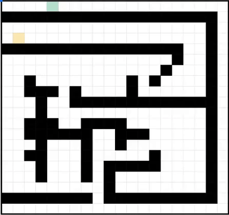
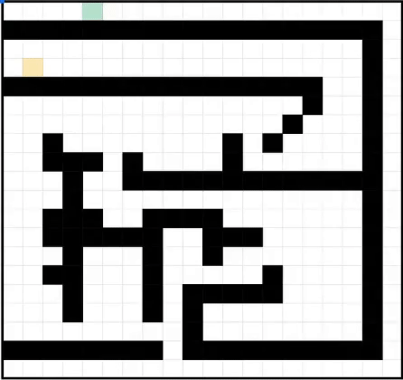

After implementing a couple shortest path algorithms in MATLAB for my Discrete Mathematics course, I decided to try to implement Dijkstra's Algorithm in Google Sheets. I managed to do it without scripting by basically creating a cellular automaton. The formula in each cell looks at the values of all its neighbors, then sets its value to the smallest of its neighbors plus one. When the values of all the cells settle, a map has been generated with the distances of all the cells from the starting cell.
To generate the path from this map, another cellular atomaton works backward from the target cell. The target cell adds itself to a "path" map, and any cell whose value is one less than a neighbor cell in "path" adds itself to "path".
Feel free to clone my spreadsheet and play with it here .